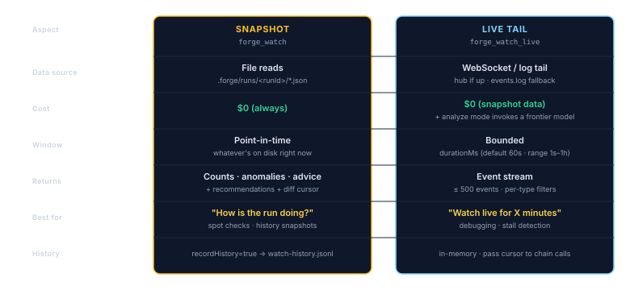

The Watcher
A second pair of eyes on a running forge. Read-only by design.
- Snapshot mode, instant point-in-time read. Free. “Slice 12 of 30, no errors, $4 spent so far.”
- Analyze mode, same data but with an AI summary. Costs a few cents. “Run is healthy but Slice 8 retried twice on a flaky test, worth investigating.”
- Live tail, short streaming window (default 60 seconds). Useful when you suspect something is hanging.
Why a Watcher?
When you execute a long plan (pforge run-plan) the executor session is focused on one thing: building the next slice. It's not a good place to also answer "how's it going?" for a second human, or to notice anomaly patterns across multiple runs. The Watcher is the operational counterpart, it tails the run, reads event streams, and summarizes state.
![Two-session topology: Session 1 (Build/Target) runs pforge run-plan in a VS Code window, with its own WebSocket hub on port 3101 and append-only files in .forge/runs/. Session 2 (Watcher) runs in a second VS Code window with its own working directory and uses forge_watch (snapshot, file reads only, $0) and forge_watch_live (bounded window WebSocket subscription with polling fallback). Watcher writes only to its own .forge/watch-history.jsonl, never to the target. The watcher's input schema exposes no write paths to the target.](assets/diagrams/watcher-two-session-topology.svg)
Two modes, one tool:
- Snapshot (
forge_watch), file-reads only, zero AI cost. Returns slice counts, token usage, gate errors, anomalies. - Analyze (
forge_watchwithmode=analyze), invokes a frontier model (defaultclaude-opus-4.7) to produce narrative advice from the snapshot.
Live Tail — forge_watch_live
For near-live observation, forge_watch_live tails the event stream for a bounded window:
- WebSocket mode, connects to the target's hub if running (
.forge/server-ports.json). - Polling fallback, tails
events.logwhen the hub isn't up. - Default window: 60 seconds. Range: 1 s – 1 hr.
- Captures up to 500 events in the response payload.

forge_watch {
targetPath: "E:/GitHub/Rummag",
mode: "snapshot"
}
forge_watch_live {
targetPath: "E:/GitHub/Rummag",
durationMs: 30000
}Anomaly Rules
The snapshot watcher runs heuristic rules over the run state and surfaces anomalies automatically. Examples:
review-queue-backlog, independent reviewer slices piling up.tempering-run-failed, a Tempering run returned non-zero.mutationBelowMinimum/flakyCount/perfRegressionCount, Tempering quality thresholds breached.- Crucible funnel stalls, ideas stuck in Crystallized with no hardener handoff.
Anomalies are emitted as watch-anomaly-detected hub events and appear in the dashboard's Watcher tab.
Watch History
When recordHistory=true (the default in v2.35+), each snapshot is appended to the Watcher session's own .forge/watch-history.jsonl, never the target's. Pair with sinceTimestamp (pass the previous report's cursor) for gap-free continuous monitoring across multiple invocations.
Dashboard Watcher Tab
The dashboard's Watcher tab consumes two event types:
watch-snapshot-completed, emitted whenforge_watchbuilds a snapshot.watch-anomaly-detected, emitted when one or more anomaly rules fire.
Chip rows surface Tempering state, Crucible funnel state, and a Home chip showing in-flight runs / open incidents / open bugs, all without touching the target project.
Security Model
.forge/runs/<runId>/ and emits events to its own hub. History writes go only to the Watcher's cwd. Verified by the read-only subscriber test in pforge-mcp/tests/.
Pairing the Watcher With the Remote Bridge
A natural pairing: the Watcher runs headless on a long run, and the Remote Bridge (Chapter 20) forwards hub events to Telegram, Slack, Discord, or OpenClaw so you can check progress from your phone. The Watcher never pushes, it just observes; the Remote Bridge decides what to surface.